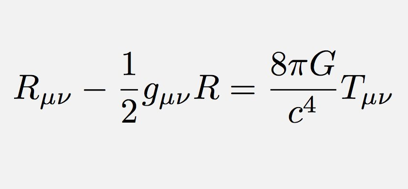
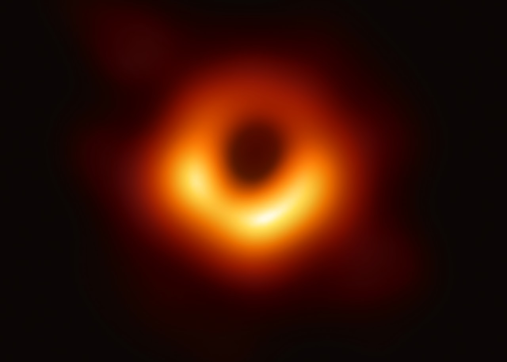
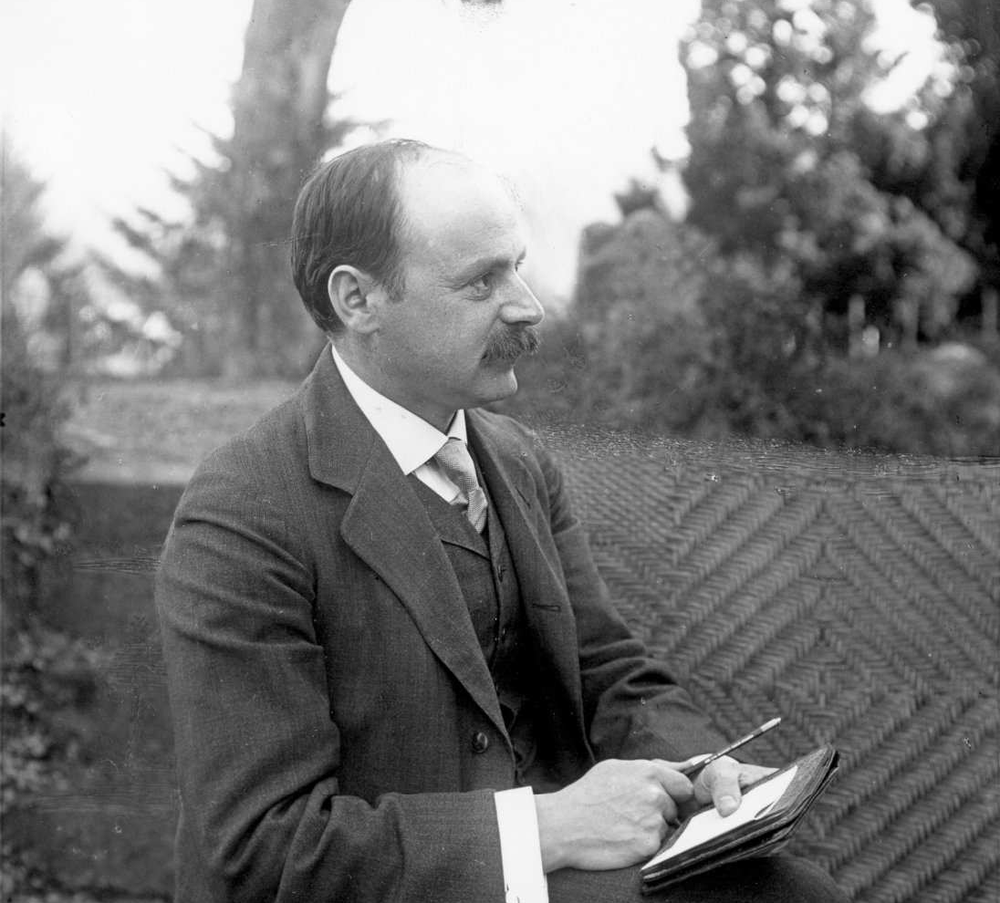
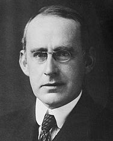
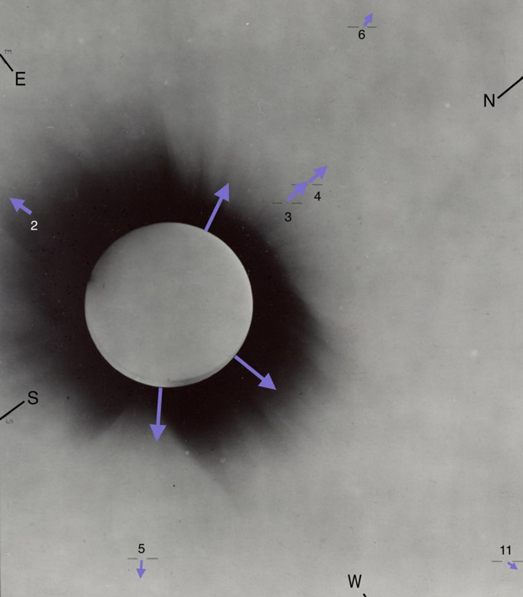
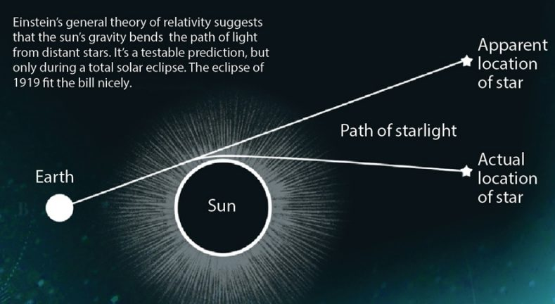
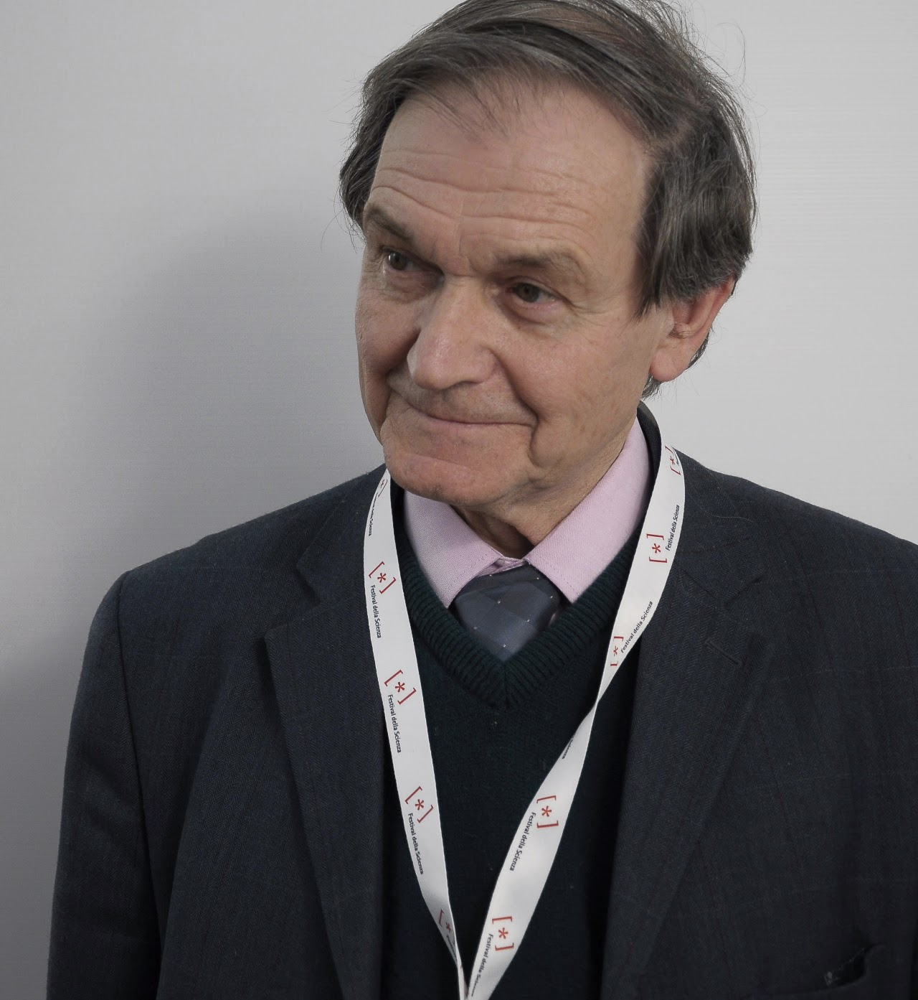
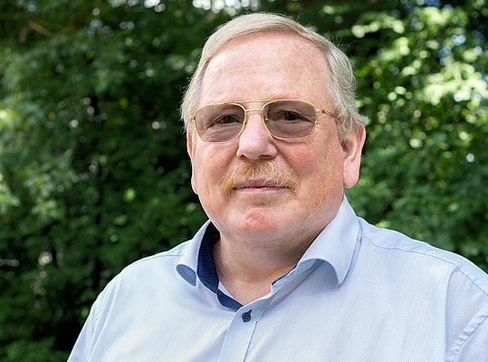

We all remember the day, 10 April 2019, when the Event Horizon Telescope team released the first image of a black hole. After that release, a huge spark came in the media, saying that Einstein's relativity had passed another test. So a question came to mind: who were the people behind the scenes who helped us go from a horrible equation (to a college student, at least) to the beautiful image? Let's dive into the full story and trace back the development of astrophysics.

To

1. The start of the revolution
After gaining worldwide reputation from the publication of the Special Theory of Relativity in 1905, Einstein got ready to achieve another landmark. He published the General Theory of Relativity, the theory that freed us from the Newtonian idea of gravity and put forward a totally new way of thinking about it: not as a force, but as a curvature of space-time. In it, he gave the famous equation (used in the title image), now known as Einstein's field equations.
2. Enter Schwarzschild
Shortly after the publication of general relativity, the German physicist and astronomer Karl Schwarzschild published, in 1916, the first exact solution to Einstein's field equations. This was a remarkable achievement, as Einstein himself had found only an approximate solution. The solution predicted a region of the universe where space-time is so curved that even light cannot escape, which later became popularised as a black hole.

3. Testing general relativity

With the advent of Einstein's new theory of gravity, the British physicist and astronomer Sir Arthur Eddington got interested and started thinking of a way to verify it. Around 1919, he thought of an idea. According to general relativity, light can bend around massive objects, and Eddington's idea was to exploit this.
In 1919, a solar eclipse was going to occur, with its shadow zone lying from Brazil to north-western Africa. Two expedition teams set off, one to the coast of Brazil and the other to north-western Africa. The plan was to photograph the positions of stars in the Hyades, a cluster in the constellation Taurus, that appear near the Sun during the eclipse, and to compare these images with images taken when the Sun is not in the way. A deviation was seen when the images were compared, giving a clear verification of Einstein's theory of general relativity.


4. Enter Roger Penrose

The 1960s were a golden decade in astronomy. With the 1963 discovery of quasars, astrophysicists were finding new kinds of objects. Then came Roger Penrose's pathbreaking 1965 paper, “Gravitational Collapse and Spacetime Singularities”. Check out the paper (only for interested and mathematically mature readers).
In this paper, Penrose proved that the gravitational collapse of a star creates a singularity, hidden behind what is called an event horizon. The event horizon is basically a boundary in space-time that divides the events an observer can see from those that can't be observed by any means.
5. Confirmation of Penrose's idea

Around 1992, Andrea Ghez, Reinhard Genzel and his team began to study the motion of stars around our own galactic centre, which is supposed to be the home of a supermassive black hole named Sagittarius A*. From their studies of the motion of stars near the centre of the Milky Way, they confirmed that the observed motion can only be explained if a black hole several million times the mass of the Sun is present at the centre of the Milky Way. Check out the animations of data collected by Andrea Ghez.
6. The Event Horizon Telescope
The Event Horizon Telescope is a global collaboration of world-leading telescopes that work together as one big telescope, to picture the event horizon of the black hole at the centre of M87, a supermassive black hole about 6.5 billion times more massive than the Sun, in the constellation Virgo. To image an object so far away at such high resolution, we need a telescope as big as the Earth. So astronomers merge powerful telescopes around the world to get as much resolution as possible, and create a picture of the century.
This is an image that shows how the theoretical and experimental branches of astrophysics are interlinked, and how each helps the other thrive. This is the story of getting from a difficult equation to a beautiful image.
Key takeaways
What to remember
- Einstein's general relativity described gravity as the curvature of space-time, and Schwarzschild found the first exact solution in 1916, which describes a black hole.
- Eddington's 1919 eclipse expeditions measured starlight bending around the Sun, confirming relativity.
- Penrose showed in 1965 that gravitational collapse leads to a singularity, and Ghez and Genzel found a black hole at the centre of the Milky Way.
- The Event Horizon Telescope combined telescopes across the Earth to image the black hole in M87.